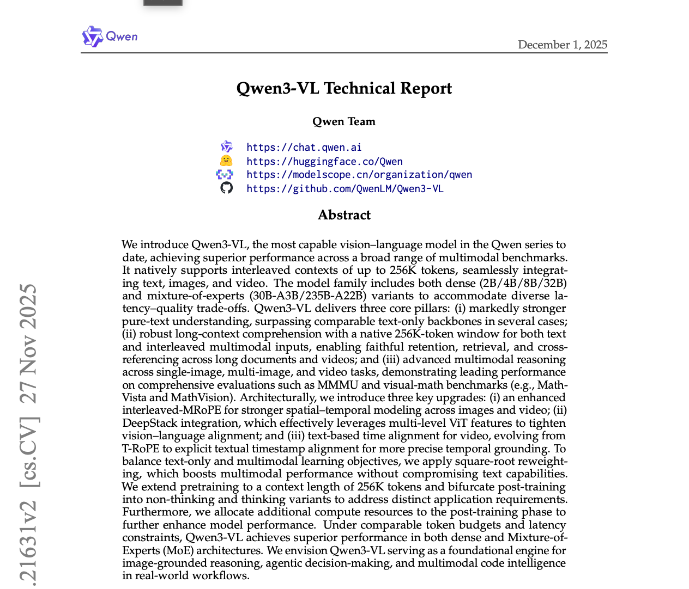
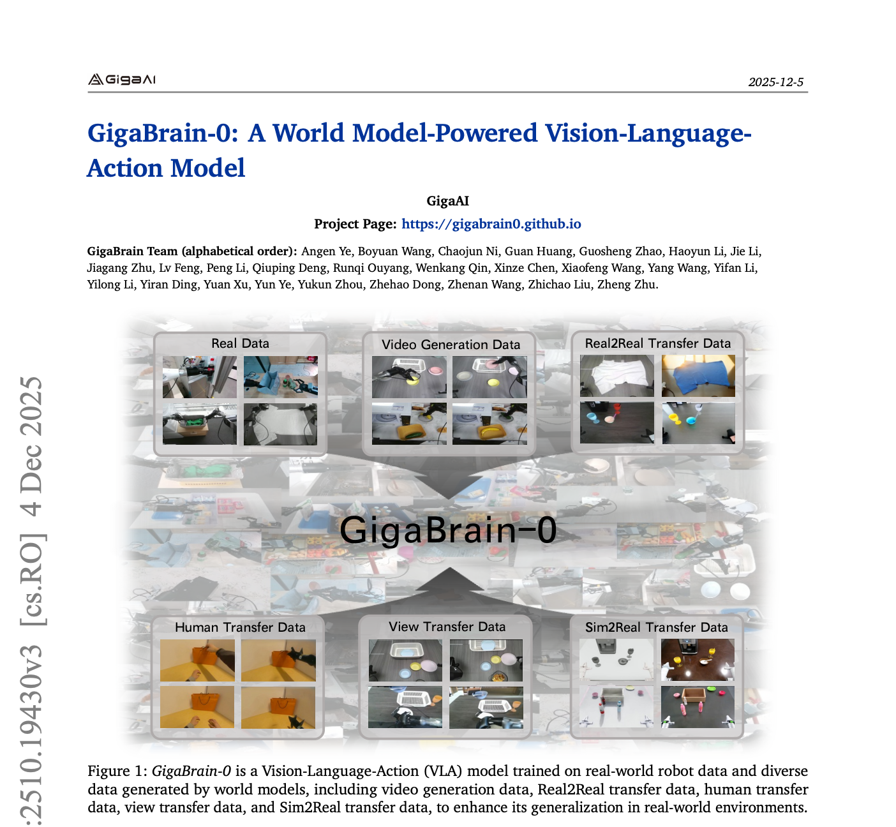

Overcoming the semantic compression bottleneck in VLA models through dynamic cross-layer semantic fusion and SE(3)-equivariant physical grounding.
Lumos Robotics • lumosrobotics.ai • jin@lumosrobotics.ai
Core motivation and approach overview
Vision-Language-Action (VLA) models are built on the inductive bias of language models, yet physical manipulation demands a fundamentally different prior: the world is not a sequence of tokens, but a space of objects and forces governed by SE(3) symmetry. Without geometric inductive bias, no amount of data can teach a robot to truly generalize. Compounding this, existing VLA architectures suffer from a semantic compression bottleneck: they condition action generation solely on the final hidden state of the Vision-Language Model (VLM), discarding the rich hierarchical representations across intermediate layers and forcing the action decoder to rely on a compressed “conclusion” rather than the full “reasoning process.”
We present PrimeWM-VLA, a novel architecture that overcomes these limitations through a Joint Infusion mechanism that dynamically integrates multi-level VLM representations into the action diffusion process, progressively re-biasing the VLA pipeline from flat patch embeddings toward object-centric 3D tokens and ultimately full SE(3)-equivariant action outputs. PrimeWM-VLA introduces three synergistic components: (1) Hierarchical Soft Routing (HSR), a timestep-conditioned routing mechanism that dynamically selects and weights representations from all VLM layers; (2) Per-Layer KV Projection (PLKVProj), independent key-value projection modules for each action block; and (3) Timestep-Gated KV Infusion (TGI), a sigmoid gating mechanism that adaptively modulates language feature injection across denoising stages. Together, these components inject physical structure at every stage of perception and control, enabling dynamic cross-layer semantic fusion and structured alignment between language understanding and action generation.
Current VLAs are built on the inductive bias of language models — yet physical manipulation demands a fundamentally different prior: the world is not a sequence of tokens, but a space of objects and forces governed by SE(3) symmetry. Without this geometric inductive bias, no amount of data can teach a robot to truly generalize. PrimeWM-VLA addresses this by progressively re-biasing the VLA representation pipeline — from flat patch embeddings toward object-centric 3D tokens and ultimately SE(3)-equivariant action outputs — injecting physical structure at every stage of perception and control.
Three synergistic components of Joint Infusion

[ Pipeline overview figure — see PDF for full resolution ]Figure 1: PrimeWM-VLA overview. The VLM backbone produces hierarchical hidden states from all layers. HSR dynamically weights these representations conditioned on diffusion timestep, shifting from deep semantic layers (early denoising) to shallow perceptual layers (late denoising). PLKVProj provides layer-specialized interpretation, and TGI adaptively modulates injection strength before feeding into the Action Diffusion Decoder.
A timestep-conditioned routing mechanism that dynamically selects and weights representations from all VLM layers. During early denoising steps, HSR preferentially routes high-level semantic features from deeper layers; as denoising progresses, it gradually shifts emphasis toward low-level perceptual features from shallower layers. This enables a principled coarse-to-fine transition.
Timestep-ConditionedIndependent key-value projection modules for each action block, allowing different layers to specialize in interpreting distinct aspects of language representations without interference. Rather than sharing a single projection across all layers, PLKVProj allocates dedicated projection spaces, preserving the representational diversity of the VLM hierarchy.
Layer-SpecializedA sigmoid gating mechanism conditioned on diffusion timestep embeddings that adaptively modulates the strength of language feature injection across denoising stages. TGI ensures that language conditioning is strong when the denoiser needs semantic guidance (early steps) and attenuated when it requires perceptual refinement (late steps).
Adaptive Gating
[ Joint Infusion detail figure — see PDF for full resolution ]Figure 2: Joint Infusion module detail. HSR computes timestep-conditioned softmax routing weights \( w_l(t) \) over all VLM layers and scales each hidden state. PLKVProj applies independent key-value projections per layer, then concatenates the projected KV pairs. TGI modulates the fused KV via a sigmoid gate \( \sigma(\mathbf{w}_t) \) before cross-attention with the denoiser query.
State-of-the-art performance across standard and physically challenging benchmarks
| Method | BridgeV2 | LIBERO-LONG | CALVIN ABC-D | Real-robot |
|---|---|---|---|---|
| Octo | 42.3% | 38.1% | 3.12 | 41.2% |
| OpenVLA | 52.9% | 48.9% | 3.87 | 54.1% |
| π0 | 67.1% | 56.4% | 4.19 | 68.9% |
| Seer | 65.8% | 58.3% | 4.28 | 66.4% |
| PrimeWM-VLA (Ours) | 71.4% | 62.8% | 4.61 | 78.3% |
Key contributions of this work
Download the paper and cite our work
@article{primewmvla2026,
title={PrimeWM-VLA: Joint Infusion of Multi-Level
VLM Representations for Language-Conditioned
Action Diffusion},
author={Lumos SZ Lab Team},
journal={arXiv preprint},
year={2026}
}